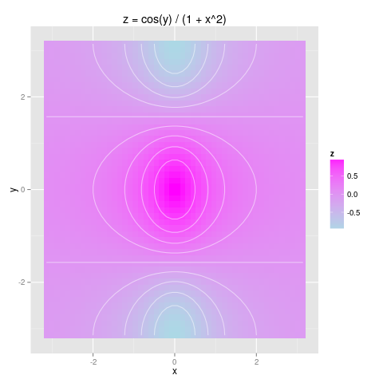

Introduction to R
Table of Contents
Lab: Introduction to R
cov VS cor
library(ggplot2) library(dplyr) library(ISLR) x <- rnorm(50) y <- x + rnorm(50, mean = 50, sd = .1) ## 相关系数，两个等长向量的相关系数，归一化的协方差 ## E[(X - EX) (Y - EY)] / sd(X) / sd(Y) <- sum[(X - X_bar) (Y - Y_bar)] / (n - 1) / sd(X) / sd(Y) sum( (x - mean(x)) * (y - mean(y)) ) / (length(x) - 1) / sd(x) / sd(y) cor(x, y) ## 协方差，若大于0，表明两个向量变化一致（同增，同减） ## E[(X - EX) (Y - EY)] <- sum[(X - X_bar) (Y - Y_bar)] / (n - 1) sum( (x - mean(x)) * (y - mean(y)) ) / (length(x) - 1) cov(x, y)
[1] 0.9939742 [1] 0.9939742 [1] 1.235165 [1] 1.235165
3d plot in R
## 3d plot x <- seq(-pi, pi, length = 50) y <- x z <- outer(x, y, function(x, y) cos(y) / (1 + x^2)) # outer product ## contour(x, y, z, nlevels = 20) # use geom_contour() ## image(x, y, z) ## persp(x, y, z) df <- expand.grid(x = x, y = y) %>% mutate(z = cos(y) / (1 + x^2)) ggplot(data = df, aes(x = x, y = y, z = z, fill = z)) + geom_tile() + geom_contour(color = "white", alpha = .5) + scale_fill_gradient(low = "lightblue", high = "magenta") + ggtitle("z = cos(y) / (1 + x^2)")

Plot scatter matrix
library(GGally) library(ISLR) ## Plot scatter matrix ## fix(Auto) # fix means repair or mend the data frame ## pairs(Auto) # use ggparis() ggpairs(Auto[, c(1:8)]) # preferred